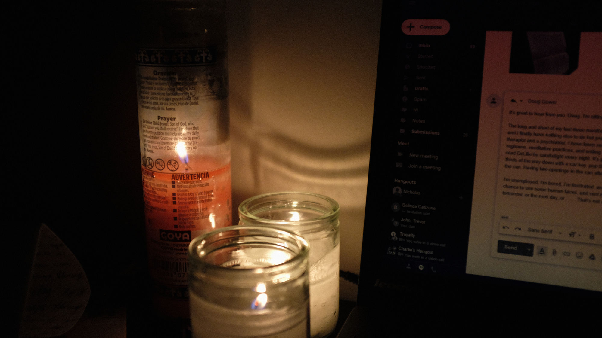

Political Writing
Reviews and Literary Analysis
Fiction, Poetry, and Essays
Letters
- Click here to receive the occasional letter from me.
- You can find the archive of past letters here.
I'm always writing new stuff. Add me on social media to stay up to date!
Twitter, Instagram, and LinkedIn.